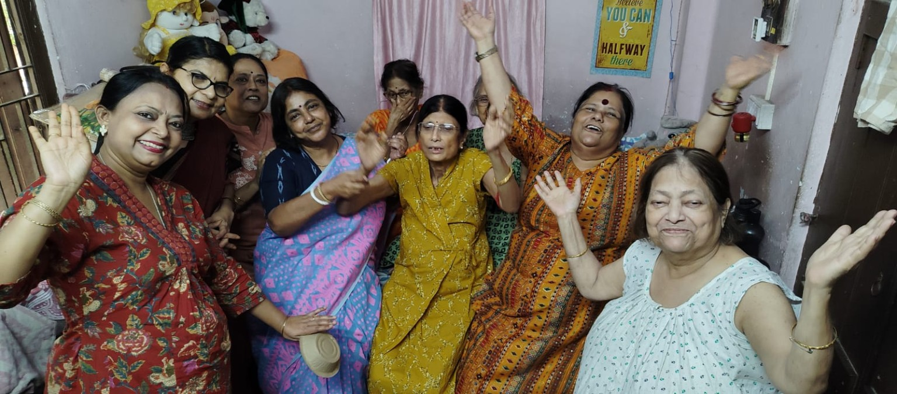

এই সংখ্যার কথাএকটি পরিবার,
একটি পরিবার,
অসংখ্য গল্প
দূরত্ব যতই থাক, স্মৃতি আর ভালোবাসার সুতোয় আমরা সবাই একই বারান্দায়।
পড়া শুরু করুন ↓
এই পত্রিকা আমাদের সবার
গল্প, কবিতা, প্রবন্ধ, স্মৃতিকথা, ছবি কিংবা ছোট্ট কোনো অনুভূতি—পরিবারের প্রত্যেকের সৃষ্টিই এখানে সমান যত্নে জায়গা পাবে।
বিষয় অনুযায়ী পড়ুন
আমাদের বিভাগ
Google Form থেকে প্রকাশিত
সাম্প্রতিক লেখা
বিভাগ অনুযায়ী সাজানো লেখা—শিরোনামে ক্লিক করলে পুরো লেখা পড়ুন।
লেখা লোড হচ্ছে...
আপনার গল্পটি
আমাদের সঙ্গে ভাগ করুন
গল্প, কবিতা, প্রবন্ধ, স্মৃতি বা ছবি পাঠাতে নিচের ফর্মটি পূরণ করুন।
লেখা জমা দিন ↗